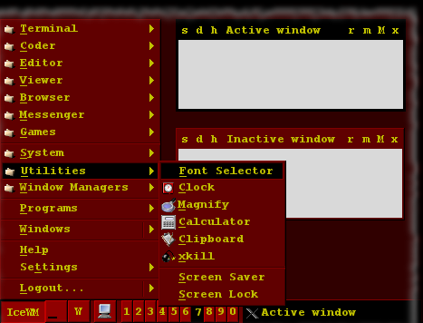

Mars Text
Actually this is a remake of the old Mars Text theme I put together when I started using IceWM.
Originally this was intended to be the predecessor of a fully graphic Mars theme, but then I liked this one so much that I gave up with the sequel.
Screenshot
desktop fragment with Mars Text

Usage
There is nothing special in its usage, however I found that some spectators got confused occasionally by the palette. They expected the window with the lighter title bar to be the active one, but in Mars Text the active/selected element is always the one with black background :
palette sample
Inactive window Active window Inactive window Minimized window
Configuration
Configuration not really supported.
All you can do is configure IceWM itself. I intended to set up everything, even for features I not use. But still there are some dark spots I not understand. ( See the Plans section below for details. )
Versions
- 0.0
- Initial release.
- 0.1 - February 2013
- Remake.
Plans
- Find out the reason of not using the image of show desktop button and fix it.
- Find out where may scrollbar appear and set its colors.
- Find out how APM monitor looks and set its colors.
- Maybe draw a few application icons to match the theme.
Download
You can find the related files on GitHub in my IceWM-theme repository’s mars-text directory :
- default.theme - theme preferences
- closeA.xpm - image
- closeI.xpm - image
- depthA.xpm - image
- depthI.xpm - image
- hideA.xpm - image
- hideI.xpm - image
- maximizeA.xpm - image
- maximizeI.xpm - image
- menuButtonA.xpm - image
- menuButtonI.xpm - image
- minimizeA.xpm - image
- minimizeI.xpm - image
- restoreA.xpm - image
- restoreI.xpm - image
- rolldownA.xpm - image
- rolldownI.xpm - image
- rollupA.xpm - image
- rollupI.xpm - image
- titleAL.xpm - image
- titleAM.xpm - image
- titleIL.xpm - image
- titleIM.xpm - image
- mailbox/errmail.xpm - image
- mailbox/mail.xpm - image
- mailbox/newmail.xpm - image
- mailbox/nomail.xpm - image
- mailbox/unreadmail.xpm - image
- taskbar/collapse.xpm - image
- taskbar/expand.xpm - image
- taskbar/linux.xpm - image
- taskbar/showdesktop.xpm - image
- taskbar/windows.xpm - image